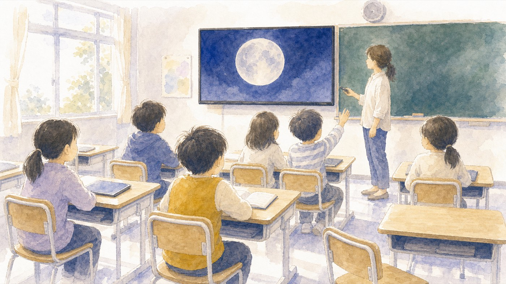
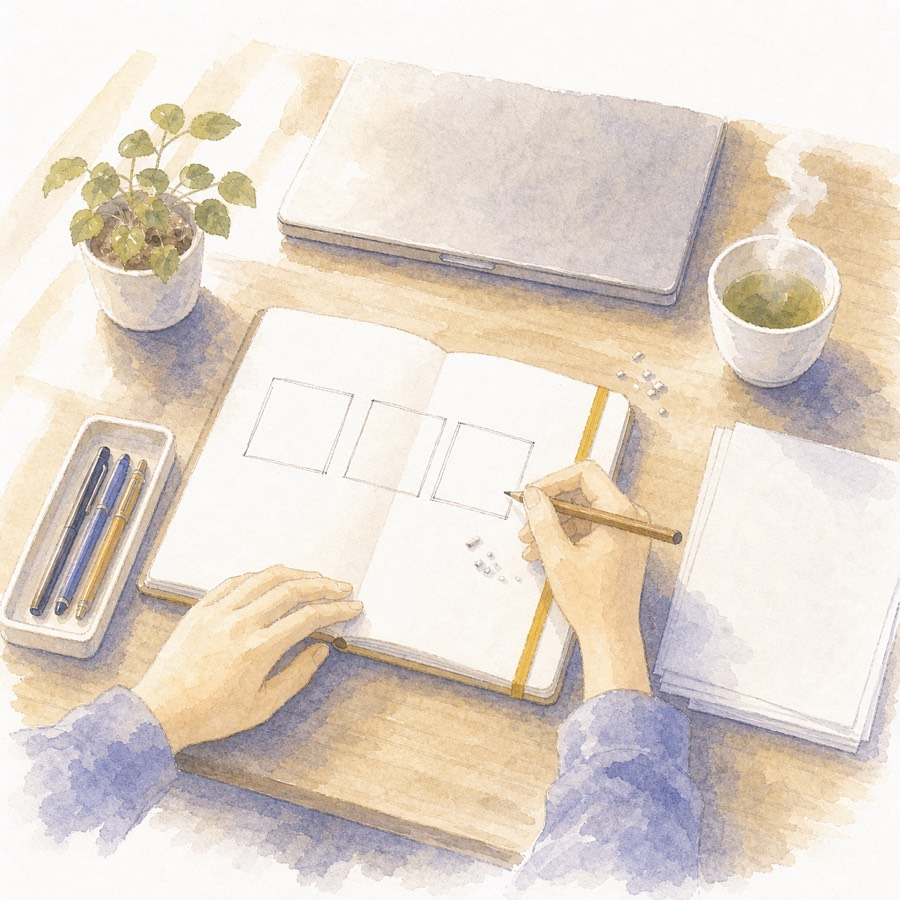
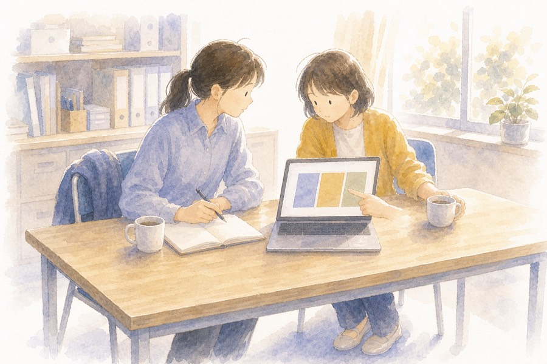
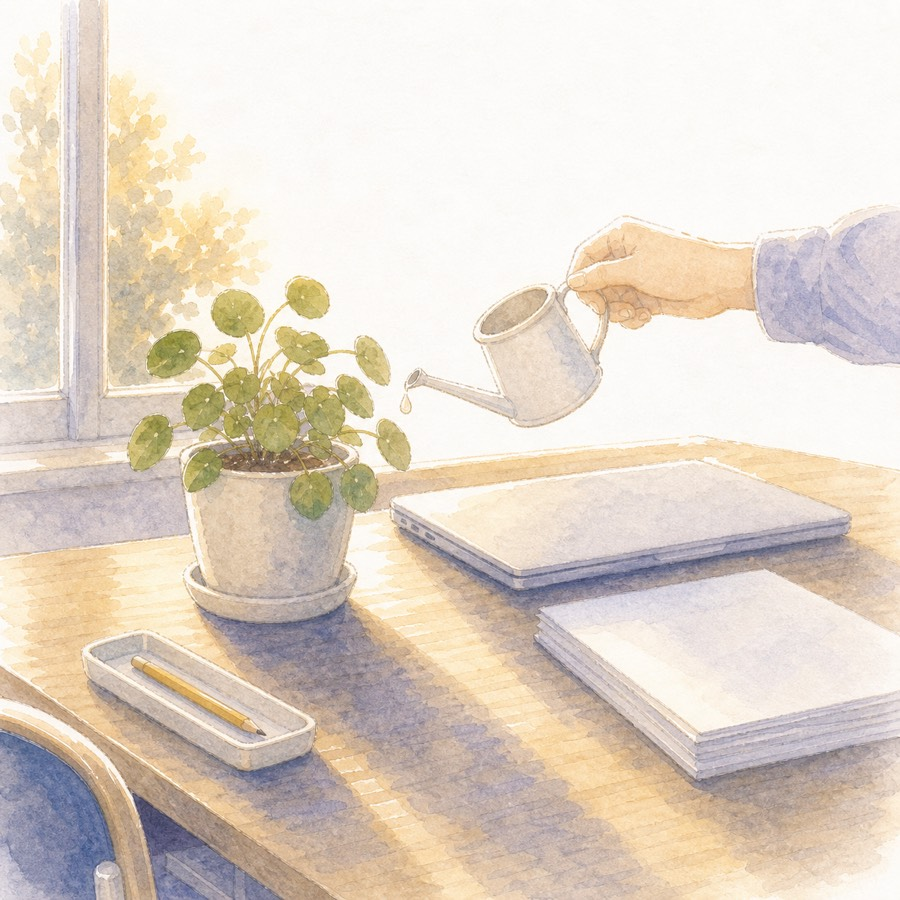

A
単元の導入
めあてを書く前に、「あれ？」「なんで？」を見せる1枚。写真をどんと1枚、問いをひとつ。それだけで単元の入口の空気が変わります。教科ごとの具体例は資料庫「教科別・導入のアイデア」に置きました。
- 写真ドン型：1枚の写真に「気づいたことは？」
- くらべる型：2枚ならべて「どこがちがう？」
- クイズ型：3択で「どれだと思う？」

前半は「考え方」、後半は「手を動かす」。むずかしい操作は出てきません。最後に、つくる時間そのものを減らす道具を2つ紹介します。
見た目の前に、考え方から。微妙な例と良い例を見くらべます。
1枚に1つ・大きく少なく・そろえる・色は3つ・飾らない勇気。
単元の導入と、学級のルールの提示。この2場面に絞ります。
文言を差し替えるだけ。自分の学年・教科で1本仕上げます。
GASとNotebookLM。くわしくは資料庫を後からどうぞ。
かっこいいスライドを作る力より、この1枚で子どもの頭に何が起きてほしいかを決める力のほうが、ずっと授業を変えます。つくる前に、3つだけ自分に聞いてみてください。
教室のいちばん後ろの席の子です。その子に読める字の大きさが、そのクラスの最小サイズになります。
説明・指示・発問のどれかをはっきりさせます。1枚に全部を入れると、どれも伝わらなくなります。
考える・話す・動く。子どもの次の動きが決まっていない1枚は、なくても授業が進みます。
デザインのセンスの話ではありません。どれも「そうすると子どもに届くから」という理由つきの、まねすれば効くルールです。
1スライド1メッセージ。言いたいことが2つあるなら、2枚に分ける。
目安は28pt以上・1枚6行まで。後ろの席に届かない字は、ない字と同じ。
位置・フォント・字の大きさをそろえる。そろえるだけで「読みやすい」が生まれる。
地の色・文字の色・強調の色。強調は1枚に1か所だけ効く。
内容と関係のないイラスト・アニメは、子どもの注意を持っていく。迷ったら消す。
根拠が気になる先生へ：認知心理学者メイヤーの「マルチメディア学習」の研究がもとになっています。くわしくは資料庫「スライドづくりの考え方」へ。
左が「がんばって作ったけれど微妙」な例、右が同じ場面の「効く」例です。どちらも6年理科「月と太陽」の導入の1枚目だとして見てください。
スライドが効く場面はたくさんありますが、今日は「準備した分だけ確実に返ってくる」2つに絞ります。
めあてを書く前に、「あれ？」「なんで？」を見せる1枚。写真をどんと1枚、問いをひとつ。それだけで単元の入口の空気が変わります。教科ごとの具体例は資料庫「教科別・導入のアイデア」に置きました。
2学期はじめの学活は、ルールを「思い出して、自分の言葉にする」時間。口で言うだけより、1枚に1つずつ見せると、聞き逃した子が出ません。掲示用にそのまま印刷もできます。

今日の原則をぜんぶ織りこんだ、そのまま使えるスライドです。ダウンロードしてGoogleスライドで開き、灰色の文字を自分の学年の言葉に差し替えるだけで完成します。
見て終わる研修にはしません。2学期の自分の教室を思い浮かべて、1本仕上げて帰りましょう。

ここからは「もっと楽をしたい人」の道です。今日は入口だけ紹介します。どちらも資料庫に、コピペで動く手順を置きました。
漢字や英単語のフラッシュカード、係カード、めあての掲示。「同じ形のスライドをたくさん」は、スプレッドシートに言葉を並べれば自動で作れます。プログラミングの知識は要りません。コピペで動きます。
単元の資料を読みこませると、スライドの下書きを作ってくれます。2026年からは修正のお願いとPowerPoint形式のダウンロードにも対応。下書きはAI、仕上げの判断は先生。この分担が現実的です。

60分に入りきらなかった分は、ぜんぶここに置いておきます。2学期の準備のとき、必要なページだけ開いてください。
3つの問い・大原則5つの根拠・つくる前のチェックリスト。今日の話の完全版です。
読む新規作成・画像の入れ方・提示のしかた・pptxの開き方。初めての先生はここから。
読む書式の使い回し・整列・画像の切り抜き・文字を読ませる帯。知っているだけで速くなる10個。
読む国語・算数・理科・社会・学活。2学期はじめの単元でそのまま使える型と問いの例。
読むスプレッドシートに言葉を並べて、フラッシュカードを自動生成。コピペで動くコード付き。
読む資料を渡してスライド案をもらい、PowerPoint形式で受け取ってGoogleスライドで仕上げる手順。
読むいらすとや・Canva・写真素材。学校で安心して使える無料サイトと、使う前の3つの確認。
読む2分だけ、感想を聞かせてください。「ここが分からなかった」が、次の研修と資料庫を良くします。

スライドがうまくなるほど、
スライドは薄く、短くなる。